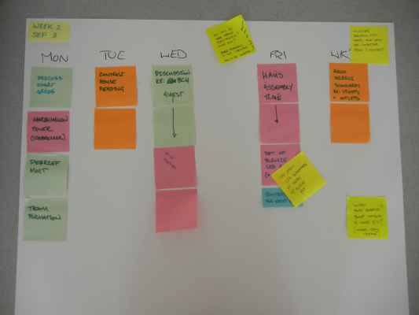

Twitter: @craftoe
Email:
| << prev | Monday | Tuesday | Wednesday | Thursday | Friday | Weekend | next >> |
Week 3
There are two big themes in week three: building our Freeduino, a microcontroller that we will learn to program, and beginning to learn how to design a wiring plan for a small home.
There are reading and writing activities to be done throughout the week, in addition to your Plushie Monster Writeup being due on Friday. If you work consistently throughout the week, you won’t be crushed come Thursday.
Monday
Materials Needed: Laptop, Freeduino (distributed in class).
You should bring your laptop and be prepared to start working on your Freeduino with a partner. The entire period is given over to getting started and (ideally) finishing your Freeduino build.
Tuesday
I have two pieces of reading for you:
- Background on Home Electricity.
Your first reading will provide a background on home electricity. Because this is the first serious reading you’ve done on this topic, there are going to be many things that are new to you. You are not required to read into the section called “How Things Go Wrong,” but I recommend it. I also recommend exploring some of the materials the author links in. (This isn’t a lot of material, and reading and re-reading it is going to help you immensely in understanding electricity and electronics.) - Physiological Effects of Electricity. (Section 3.1 in the PDF.)
The first reading provides an overview of how electricity makes its way into a home. The second reading covers what happens when you get zapped. You can also download the second reading as a PDF if you prefer, and simply read the marked section.
Wednesday
Materials Needed: Laptop, “Unknown Terms”, Freeduino
In Class
- Reading Q&A (5m)
- Reading Quiz (10m)
- Home Furnishings (15m)
- Collaborative Reading (~ 45m)
- Freeduino Build (Contd.) (?)
Quiz
We will begin with a quiz on the prior reading.
Collaborative Reading
We will be doing an exercise in class that I call “collaborative reading.” I have titled this exercise Exploring Home Wiring Planning, and that link will tell you more about what we will be doing in class.
Freeduino Build
We may, or may not, spend more time building our Freeduinos today.
Homework
See the homework described in the Exploring Home Wiring Planning exercise.
NOTES: The Q & A on this day was long—nearly an hour. We spent 75 minutes on questions and the subsequent quiz. We then took a 5 minute break, I introduced the Contrast House for about 5 minutes, and then there were 30 minutes for the reading. Hence, the assignment changed for Friday.
Thursday
Read Shock Current Path, which talks about how we end up getting zapped. This reading comes from All About Circuits, a freely available textbook on electricity and electronics. (Section 3.2 in the PDF.)
Friday
Materials Needed: Laptop, Freeduino
- Reading Discussion (5-10m)
- Freeduino Build
- Freeduino Test
We should be able to complete our Freeduinos today, and then test them before we leave for the weekend.
Weekend
We’re currently slowed down on house “construction” due to problems with the laser cutter.
This weekend, we’re going to do some distributed note taking. You’ll each have research and writing responsibilities that will be contributed back to the whole group.
Assignment: Distributed Electric Code Research
Historical Record
These are the planning documents developed during the summer of 2012 that guided this (and future) weeks.
